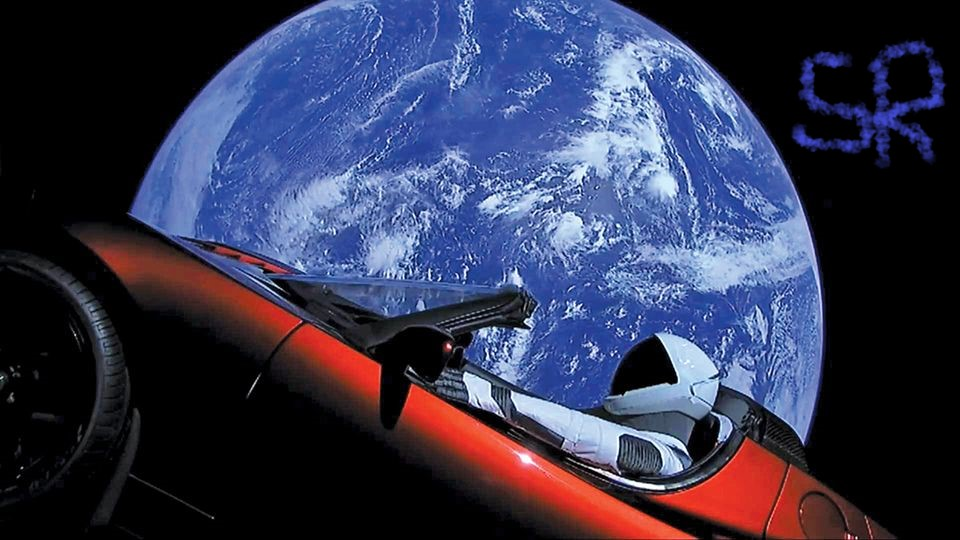

Hyperblog
Tu blog de cabecera
Aquí inicia la historia de un gran proyecto
Y este es el párrafo de inicio donde vamos a explicar las cosas increíbles que se pueden hacer con ramas

Los blogs son la forma de escribir y expresar tus ideas de la mejor manera. Excepto si no sabes escribir...
Suscribete y dale like.